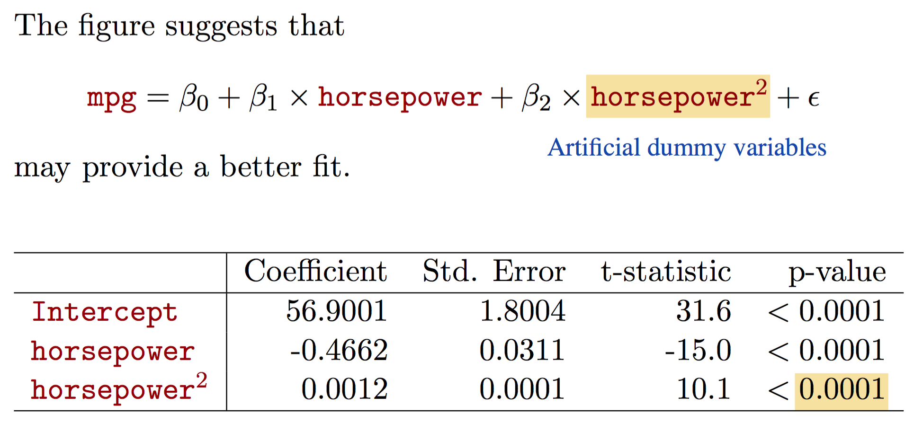
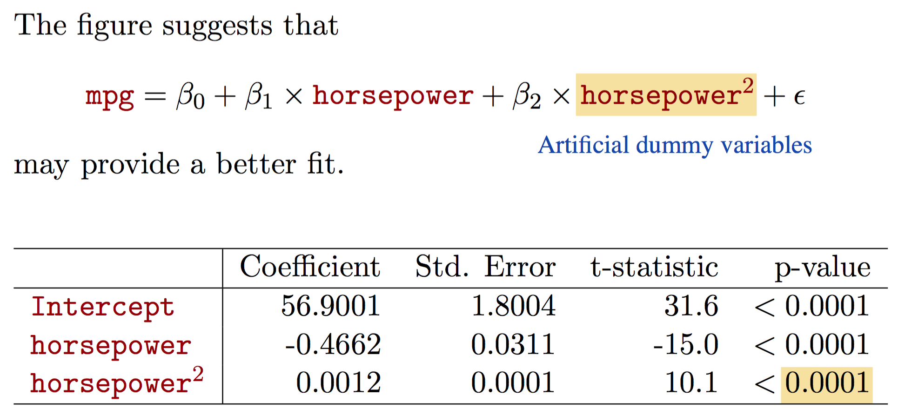
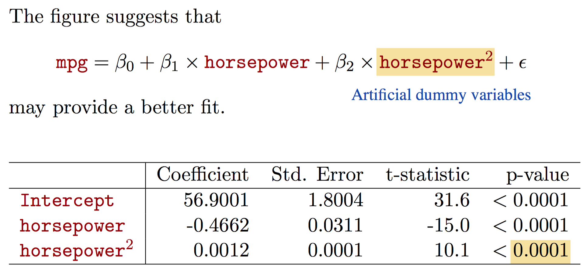

In linear regression we assume that true f(x) is linear, or can be modeled by f(x)=B0+B1X1+...BpXp. We estimate f(x) with f^(x)=B^0+B^1X1+...B^pXp.
Estimating Coefficients
Simple linear regression is a parametric problem, in that we need to estimate parameters B0 and B1.
Simple linear regression makes a line that is as close to datapoints as possible. We quantify closeness with RSS, defined as:
where y¯ and x¯ are the averages over all x and y values respectively.
Assessing Accuracy of Coefficient Estimates
Hypothesis testing: Let there be a null hypothesis H0 and an alternative hypothesis Ha. After running some tests, if we find that there are results that are statisticially significant in favor of Ha, then we reject H0.
In the case of assessing coefficient estimates, we let H0:B1=0 and Ha:B1≠0.
In order to judge whether or not B0 might be 0, we can use a t-statistic, a measurement drawn from analysis of our estimations.
t=SE(B^1)B^1−0
The t-statistic is a measurement of the number of standard deviations B^1 is away from 0 using a student's t-distribution. If t is large, it indicates that B1 is likely non-zero. More precisely, if the p-value associated with the t-statistic is large, it is likely that B1 is non-zero. Generally we use t>2 as our threshold for rejecting H0.
Assessing Model Accuracy
We've rejected B1=0. Now we need to see how close our estimate is to the true B1.
Residual Standard Error: RSE=n−21RSS; average amount that response will deviate from true regression line; is an estimate for standard deviation of ϵ.
R2 statistic: R2=TSSTSS−RSS; proportion of variance explained by a linear model w.r.t to TSS=∑(yi−y¯)2
TSS is the total variability in the response with y¯ as our predictor.
RSS explains some of the variability.
TSS - RSS is the variability that's left over after regression
R2 has an interperetational advantage over RSE since its always between 0 and 1.
Can use confidence intervals:
95% confident that the true value of B1 lies between [B^1−2SE(B^1),B^1+2SE(B^1)] since 2.5% of data lies above and below t = 2 in a student's t-distribution.
Multiple Linear Regression
Now, predictor is of the form Y^=B^0+B^1X1+...B^pXp
Bj: average effect on Y for a unit increase in Xj holding all other regressors fixed
Why not just run a simple linear regression for each regressor?
Can't see effect of 1 regressor in presence of others
Each equation will ignore other regressors
Can't account for correlations between regressors
We estimate regression coefficients by minimizing RSS, given by
Correlation between regressors is an issue. Example from ISLR:
Newspaper advertising showed high correlation with sales in a simple linear regression setting. However, newspaper advertising's effect was not statistically significant in the presence of radio and TV advertising. In fact, since newspaper advertising was heavily correllated with radio advertising, it recieved the credit for radio advertising's effect (in the simple linear regression setting).
We can use t-statistics to find out whether or not a regressor has a statistically significant effect in the presence of other regressors. As seen in the above table from ISLR.
Answering: Is there any relationship between any response and any predictor?
Let H0:B1=B2=...=Bp=0 and Ha:Bj≠0 for some j.
We can compute the F-statistic. Then, we compute the corresponding p-value and then can discern whether or not we should reject the null hypothesis. Note we can't just use the F-statistic to reject H0.
F=RSS/(n−p−1)(TSS−RSS)/p
Answering: Is there any relationship between a subset of regressors and the predictor?
Select a subset of size q from the coefficients.
Run a hypothesis test where H0:Bp−q+1=Bp−q+1=...=Bp=0.
Compute an RSS_0 from a linear regression with all regressors except the q removed.
Use F=RSS/(n−p−1)(RSS0−RSS)/q and use the associated p-value to determine the statistical significance of the subset of regressors.
Note: Still need to look at overall F-statistic even if we have individual p-values with for each regressor. When p is large, we will have some (5%) p values that are small just by chance. However, F-statistic adjusts for number of predictors.
Deciding on Important Regressors
Forward Selection:
Begin with a model containing only the intercept
Fit p simple linear regressions
Add regressor with smallest RSS to model
Repeat 2 - 4 (without repeating regressors) until some stopping rule satisfied
Backward Selection:
Begin with all regressors
Run regression
Remove variable with largest p-value
Repeat 2 - 3 until stopping rule satisfied (i.e: all regressors meet a p-value threshold)
Mixed Selection:
Start with no regressors and only intercept
Add regressors with minimum RSS
Since p-values can increase as new regressors added to model, remove p-values that exceed a certain threshold
Continue process until all regressors have sufficiently low p-value
Model Fit
Note:R2 will always increase when more regressors are added to the linear model. This is because it allows the model to more closely fit training data. One possible way to use this fact is if a regressors added to a model increases the model's R2 by a miniscule amount, then it is possible that the variable does not have a statistically significant effect on the response when considering other regressors included in the model.
Note:RSE=n−p−11RSS. Models with more regressors can have higher RSE if the decrease in RSS is small relative to the increase in p.
Sources of Uncertainty in Prediction
Predicted least squares plane is only an estimate for true population regression plane.
We can use confidence intervals to determine how close Y^ is to f(x)
Model bias - Assuming data is linear when it might not be
Response can't be predicted perfectly because of irreducible error
Prediction intervals
We can construct confidence intervals to quantify uncertainty surrounding a measurement over a large number of observations. We can use a prediction interval to quantify uncertainty for a specific prediction.
Other Considerations in Regression Model
1. Qualitative Predictors
Some regressors will be qualitative. We can capture the effect of these regressors using indicator variables. For example, if we wish to measure the effect of gender (a variable with only two levels male and female), we can create a variable xi, where
Which level gets assigned 0 or 1 is somewhat arbitrary. This dummy variable models the effect of the difference between male and female. For example, if the p-value of B^1 is not statistically significant, then we can accept the null hypothesis and say that an observation being male or female doesn't affect output (the difference between male and female is not statistically significant). In this case, B0 can be interpereted as the average output for females and B1 as the average amount males are above females.
However, choosing the numbers 0 and 1 has an effect on the interperetation of results. For example, we could have modeled the same data as
yi={B0+B1+ϵiB0−B1+ϵimalefemale
Now, B0 is the overall average measure of output. B1 tells us the amount that females are below the average and males are above the average.
Note: Different choices for encodings lead to different interperetations.
We can also encode qualitative predictors with more than two levels by using multiple dummy variables. For example, if we want to encode an observation being either an Engineering, College, or Wharton student, we can let:
In this case, the Wharton category is the baseline. B0 is the average output for Wharton students. B1 is the average that Engineering students are above Wharton students. Finally, B2 is the average amount (in units of response) that College students are above Wharton students.
2.Extending Linear Model
We can model interaction effects between different regressors by adding an interaction term. Let's say we begin with the model Y=B0+B1X1+B2X2+ϵ. If X1 and X2 seem to have a synergistic effect, then we can add a third term X1X2 to the model. Our model now becomes Y=B0+B1X1+B2X2+B3X1X2+ϵ. Doing so relaxes the additive assumption in the following way:
Note that we can re-write our model as Y=B0+(B1+B3X2)X1+B2X2+ϵ. Thus, a unit increase in X2 actually affects the amount by which X1 affects Y.
If the effect of the interaction term is statistically significant and the true model is not purely additive, we should see an increase in the R2 value of the model with the interaction term included.
Remember the hierarchical principle: include the base terms X1 and X2 in the model when we wish to include the interaction term X1X2even if neither X1 nor X2 have statistically significant p-values.
Note: to include interaction effects between qualitative and quantitative variables, we can simply multiply their regressors to form an interaction term as before.
Non Linear Relationships
Simply include some transformation of an existing regressor.

3. Potential Problems
Non-linearity of response-predictor relationships
Correlation of error terms
Example of correlation in error terms time-series data
Correlation is an issue: if there is correlation, estimated standard errors tend to underestimate true standard errors, resulting in confidence intervals that are narrower than they should be.
Non-constant variance of error terms
Can perform transformations on Y^ to make variance in error terms constant (when residuals increase w.r.t x).
Outliers
Possible that outliers may not have a large effect on least squares slope or intercept. However, they might have a significant effect on the RSE or R2 statistic.
Can identify outliers by looking at residual plots. Use studentized residuals and if an observation has a residual ≥3, we can classify as outlier (just a general rule).
High-leverage points
Outliers are points for which yi is unusual given an xi. High leverage points for which xi is unusual. Removing high-leverage points can have substantial impact on slope and intercept of least squares line.
Fairly easy to identify high-leverage points in simple linear regression.
In multiple linear regression, it's important to look at predictors whollistically to find high leverage points.
Notice how the red point does not have an unusual value for neither X1 not X2. However, the combined X1,X2 value is unusual.
Leverage statistic given by
hi=n1+∑j=1n(xj−x¯)2(xi−x¯)2
Noting that the average leverage for all observations is np+1, an observation with a leverage statistic that greatly exceeds np+1 could be classified as a high-leverage point.
Collinearity
Comparing KNN with Linear Regression
KNN Regression: Given a value for K and a prediction point x0, KNN regression identifies the K training observations that are closest to x0 (represented by N0). It then estimates f(x0) using the average of all training responses in N0. Formally, f(x0)=K1∑xi∈N0yi
Optimal value for K will depend on the bias variance tradeoff. Usually, for small K (i.e K=1), the variance is high but bias extremely low. The variance is high because any prediction (when K=1) will be based entirely on just one training observation.
Parametric methods outperform non-parametric methods when parametric methods make correct assumptions of the form of the data. For example, if we fit a linear model to a fairly linear data-set, then a least squares regression might fit the data better than KNN regression. However, with increasing non-linearity, non-parametric methods, such as KNN regression better fit the data.
Note:KNN regression suffers from the curse of dimensionality. As dimensions increase, the N0 observations closest to x0 become further and further away from x0 as the number of dimensions increases.

 
